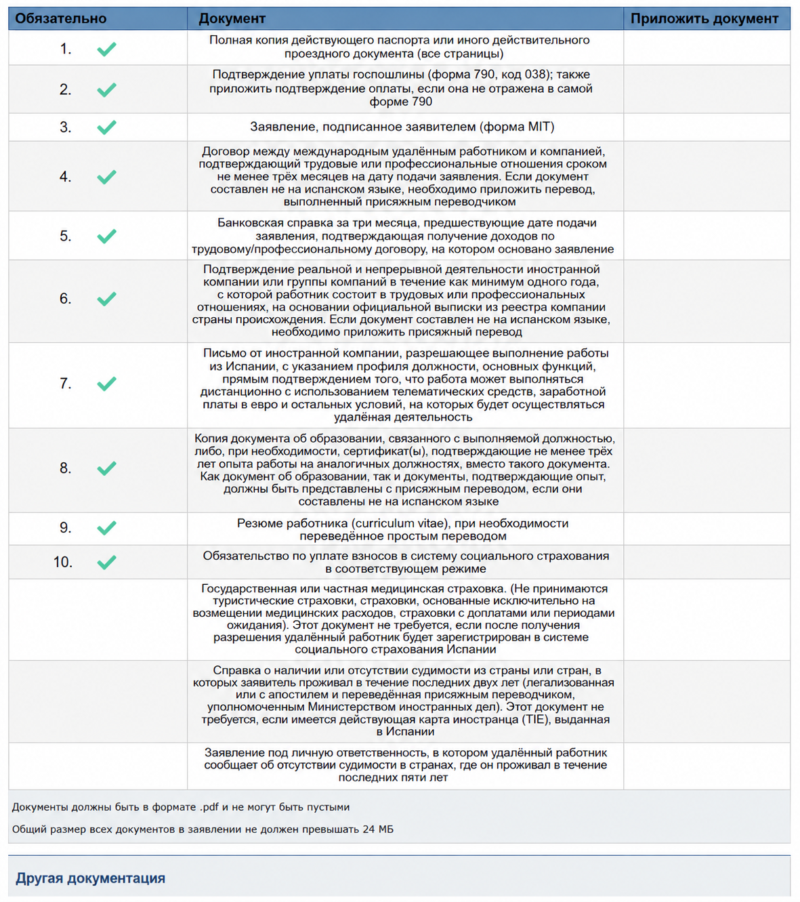

Первичная подача
Полный список документов для визы и ВНЖ цифрового кочевника в Испании для тех, кто работает по контракту
Помощь в подаче документов на ВНЖ Испании: t.me/ola_espana
Полный список документов для визы и ВНЖ цифрового кочевника в Испании для заявителя из России, который оказывает услуги компаниям-клиентам по договорам. После одобрения заявитель регистрируется в Испании как работающий на себя — autónomo.
Если вы работаете в найме по трудовому договору, см. документы для тех, кто работает в найме.
Список документов
Ниже — основной список документов для подачи на визу или ВНЖ цифрового кочевника для тех, кто работает по контракту. Присяжный перевод (traducción jurada, также называют хурадо-переводом) — официальный перевод на испанский, выполненный присяжным переводчиком.
| Документы для тех, кто работает по контракту |
|---|
| Паспорт Полная копия действующего загранпаспорта — все страницы, включая пустые. |
| Госпошлина Tasa 790 038 Форма государственной пошлины по заявлению и подтверждение оплаты. Если оплата не отражена на самой форме, прикладывают отдельную квитанцию или подтверждение банка. |
| Заявление MIT Официальная форма Formulario MIT, заполненная и подписанная заявителем или представителем в пределах его полномочий. См. Formulario MIT. |
| Контракты с клиентами Подтверждают профессиональные отношения минимум за 3 месяца до подачи. Из договоров должно быть понятно, какие услуги оказывает заявитель, на каких условиях и за какое вознаграждение. См. Требования к контракту и присяжный перевод. |
| Банковская выписка за последние 3 месяца Показывает фактическое поступление дохода по договорам. Поступления должны сопоставляться с инвойсами за тот же период. Если доход по договорам ниже требуемого минимума, разницу можно подтверждать ликвидными средствами на банковских счетах. См. Банковская выписка. |
| Документы о регистрации клиентов Подтверждают, что компании-клиенты реально существуют и ведут деятельность не менее 1 года. Для российского юридического лица используется выписка из ЕГРЮЛ, для ИП — выписка из ЕГРИП; для иностранных компаний — соответствующий официальный реестровый документ. См. Документы компании и присяжный перевод. |
| Письма от клиентов Клиенты подтверждают характер услуг, удалённый формат работы, сроки сотрудничества, суммы и возможность выполнять работу из Испании. См. Письмо компании. |
| Диплом или подтверждение профессионального опыта Подтверждает квалификацию заявителя: профильное образование либо не менее 3 лет релевантного профессионального опыта. Российский диплом подается с апостилем и присяжным переводом. Опыт можно подтверждать официальной выпиской из трудовой и другими документами о работе. См. Апостиль диплома, Выписка из трудовой и присяжный перевод. |
| Резюме (CV) на испанском Краткое резюме с образованием, профессиональным опытом, текущей деятельностью и навыками, которые связывают квалификацию заявителя с услугами по контрактам. См. Резюме (CV). |
| Обязательство зарегистрироваться как autónomo (скачать) Заявитель обязуется после одобрения зарегистрироваться в испанской системе социального страхования как работающий на себя и платить соответствующие взносы. Документ заполняется на испанском языке. |
| Справка о несудимости При первичной подаче подтверждает отсутствие судимости в странах проживания за последние 2 года, если не действует исключение UGE. Российская справка подается с апостилем и присяжным переводом. См. Справка о несудимости и присяжный перевод. |
| Декларация об отсутствии судимости за последние 5 лет (скачать) Отдельная декларация заявителя на испанском языке (declaración responsable). Она не заменяет справку о несудимости, когда справка требуется; перевод не нужен. |
| Инвойсы (facturas) за последние 3 месяца Подтверждают доход по профессиональным договорам. Суммы и даты должны сопоставляться с поступлениями в банковской выписке. Акты или аналогичные документы можно приложить дополнительно, если они используются в отношениях с клиентом. |
| Подтверждение легального нахождения в Испании Нужно при подаче на ВНЖ из Испании. Прикладывают загранпаспорт и доказательство въезда или легального пребывания: визу, штамп въезда или declaración de entrada. Если у заявителя уже есть действующая TIE, прикладывают TIE. См. Легальное нахождение. |
| Сопроводительное письмо Коротко объясняет, кто заявитель, с какими клиентами он работает, какие услуги оказывает, как устроен доход и как документы в пакете связаны между собой. |
| Документ о назначении представителя — если подаёт представитель Designación de representante подтверждает полномочия представителя подписать заявление и подать документы от имени заявителя. Если заявитель подается самостоятельно, этот документ не нужен. |
Пример состава пакета для подачи
Пример названий файлов для тех, кто работает по контракту. Номера повторяют строки формы UGE; остальные документы загружаются в раздел дополнительных документов.
- 01_Pasaporte.pdf — полный загранпаспорт, все страницы.
- 02_Tasa_790_038.pdf — госпошлина Tasa 790 038 и подтверждение оплаты.
- 03_Formulario_MIT.pdf — заполненное и подписанное заявление MIT.
- 04_Contratos_clientes.pdf — контракты с клиентами, подтверждающие отношения минимум 3 месяца до подачи.
- 05_Extracto_bancario_ultimos_3_meses.pdf — банковская выписка или справка за последние 3 месяца с поступлениями по договорам.
- 06_Documentos_clientes.pdf — документы о регистрации клиентов и их деятельности минимум 1 год.
- 07_Cartas_clientes.pdf — письма клиентов с описанием услуг, удалённого формата, сроков, сумм и возможности работать из Испании.
- 08_Titulo_o_experiencia.pdf — диплом либо документы, подтверждающие минимум 3 года релевантного опыта.
- 09_CV.pdf — резюме заявителя на испанском.
- 10_Compromiso_cotizacion_autonomo.pdf — обязательство зарегистрироваться как autónomo и платить взносы в испанскую систему социального страхования.
- 12_Certificado_antecedentes_penales.pdf — справка о несудимости, если она требуется.
- 13_Declaracion_responsable_antecedentes.pdf — декларация об отсутствии судимости за последние 5 лет.
Дополнительные документы
- Carta_explicativa.pdf — сопроводительное письмо.
- Facturas_ultimos_3_meses.pdf — инвойсы за последние 3 месяца; при необходимости вместе с актами или аналогичными документами.
- Estancia_regular_en_Espana.pdf — загранпаспорт с доказательством въезда или легального пребывания либо TIE.
- Representacion.pdf — документ о назначении представителя, если заявление подаёт представитель.
Что важно для тех, кто работает по контракту
Пакет должен показывать реальную профессиональную деятельность, а не разовый заказ без истории. Контракты, инвойсы, банковские поступления и письма клиентов должны согласовываться между собой.
После одобрения заявитель регистрируется в Испании как autónomo и платит взносы в испанскую систему социального страхования.
Если заявитель является собственником компании-клиента или фактически контролирует её, по памятке UGE дополнительно подаются документы, подтверждающие собственность или контроль, последняя декларация компании по налогу на прибыль, сведения об инвестициях компании в производственные активы и история сотрудников по системе социального страхования.
Раздел с файлами в форме подачи
Основные документы загружаются в свои поля электронной формы UGE, а документы без отдельного поля — в раздел «Другие документы».

Официальные ссылки
Закон, памятка UGE, страница подачи и другие официальные ресурсы собраны на странице Полезные ссылки.